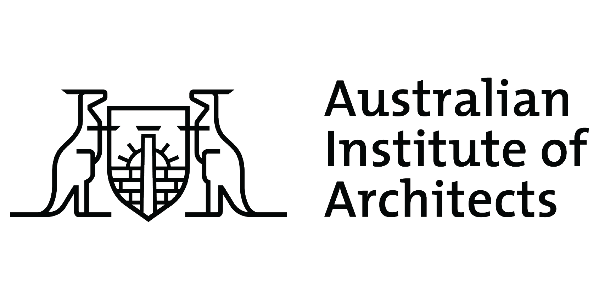
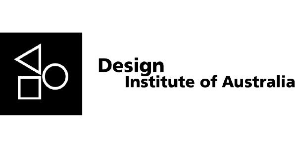
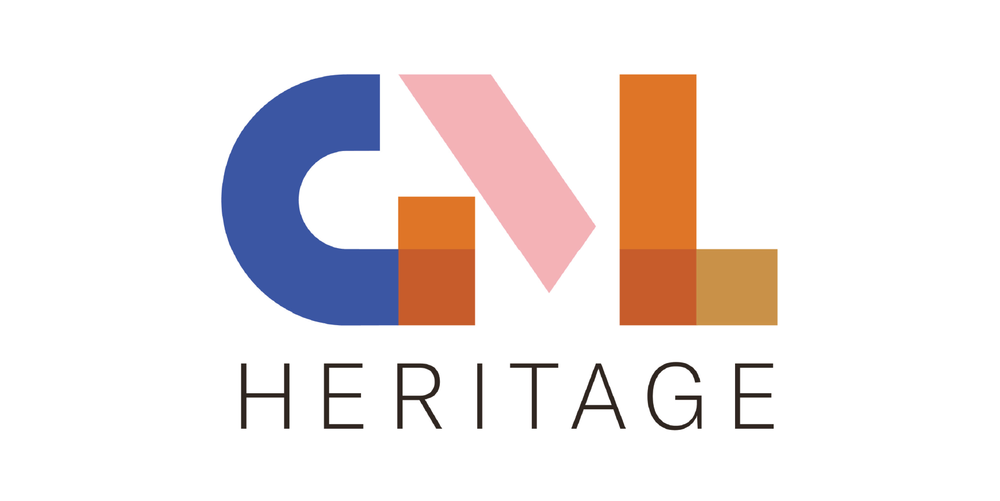
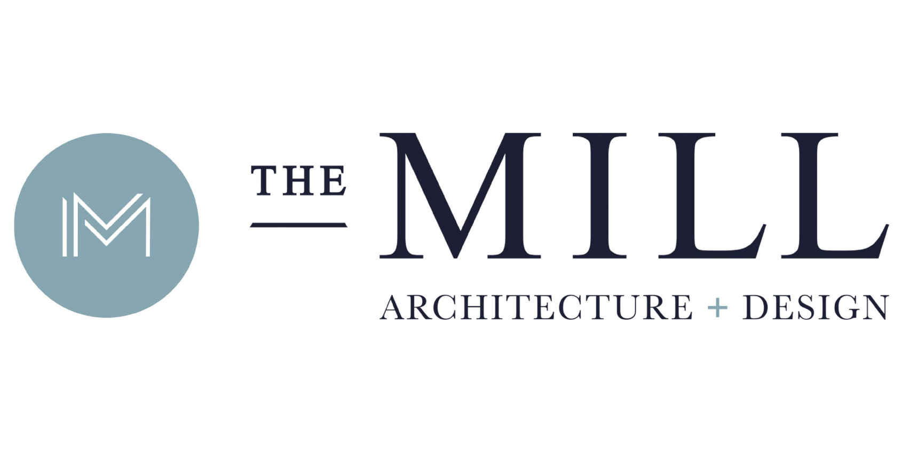

Events
Public tours, talks, screenings, sketch days, and once-a-year nocturnes. Open to anyone.
View eventsAbout Canberra Modern
Conservation Through Participation.
We celebrate, document, and protect Canberra’s mid- to late-twentieth-century built heritage by bringing more people into the work.
Our philosophy
We don't believe buildings are saved by listings alone. They are saved by being used, photographed, written about, and visited. Our programme is built around getting more people in front of Canberra's modernism more often, and then helping them advocate for the buildings they have seen.
What we do
Public tours, talks, screenings, sketch days, and once-a-year nocturnes. Open to anyone.
View eventsA small but growing archive of essays, films, and oral histories, most produced by volunteers.
Read & watchSubmissions, letters, listings, and the slow work of convincing planners to look twice.
Get involvedSelf-guided tours, maps, and pocket reading lists. Download and walk.
Browse the mapPartners & supporters
Canberra Modern is an independent volunteer organisation. Our partners support us through collaboration, not funding.




Also working with
Contact
We are a small, volunteer-run organisation. Email is the best way to reach us, and we read everything.
Subscribe
Events, stories, and campaigns. Free, always.